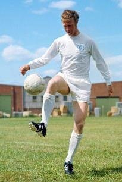
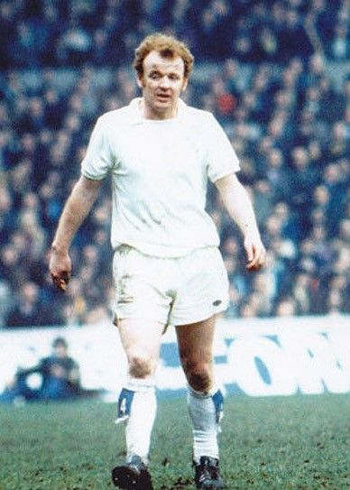
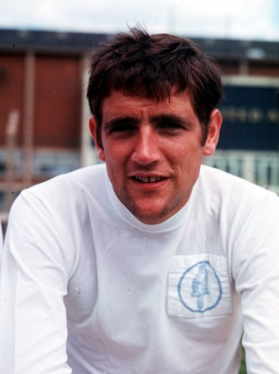

This is the webpage that contains the key players that have played for Leeds United

Name- Jack Charlton
Position- Centre Back
Apperances- 773
Description- Charlton made a club record 773 appearances for Leeds over a 23-year period, becoming one of the all-time great central defenders in the game.

Name- Billy bremner
Position- Centre Midfield
Apperances- 772
Description- spirational captain, tireless leader, world-class midfielder. Bremner was all of these at the same time and so much more. From his fiery red hair to the toes of his boots he was a complete footballer whose frame was packed with more than enough commitment to belie his five-foot-five stature.

Name- Norman Hunter
Position- Centre Back
Apperances- 726
Description- Helping Leeds rise from the Second Division, Hunter was at the heart of the defence as the club became champions of England twice and Inter-Cities Fairs Cup winners twice, along with successes in the 1968 League Cup, 1969 Charity Shield and 1972 FA Cup.